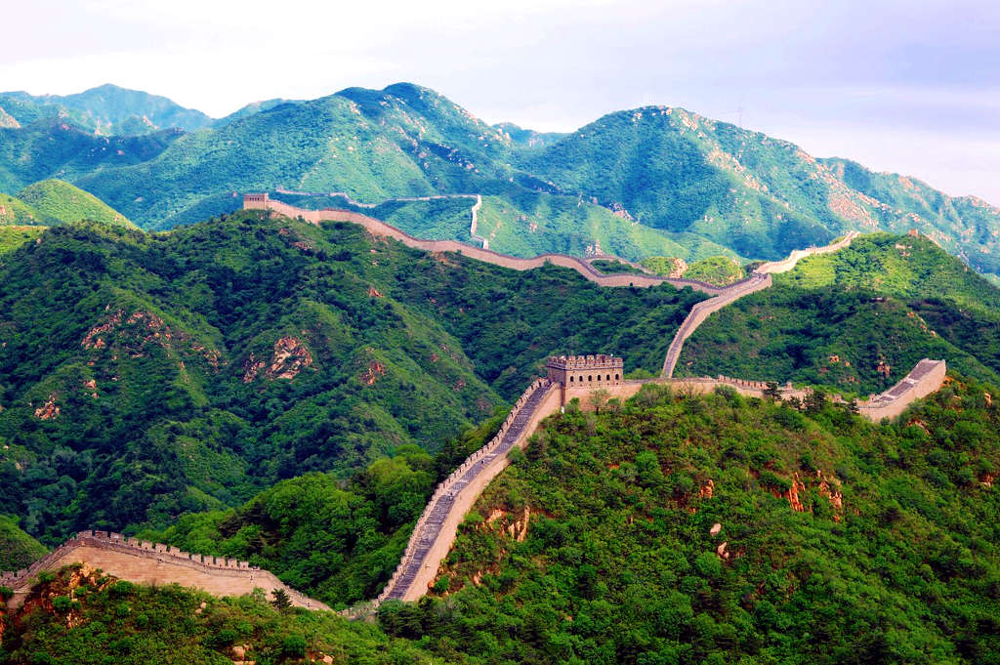

Kineski zid je nastao zbog potrebe kineskog naroda da se odbrane od napada Huna.
Kineski zid takodje nosi naziv "najduze groblje na svetu" zbog broja umrlih ljudi u toku gradnje zida.
Gradjevinska kolica su nastala upravo u Kini, izumeli su je radnici, kako bi sebi olaksali nosenje materijala pri gradnji Kineskog zida.
Duzina kineskog zida iznosi cak 8851km i samim tim cini najduzu gradjevinu na svetu.
Kineski zid se prostire od stepa srednje Azije, pa sve do Zutog mora.
Kraj Kineskog zida izgleda kao "zmajeva glava".
